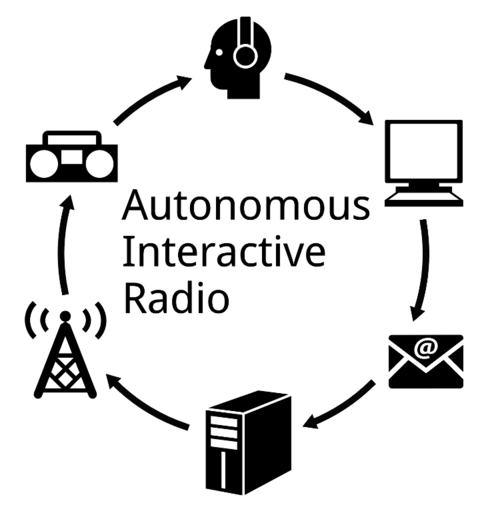

people doing strange things with electricity
This dorkbot-nyc meeting took place at 7pm on Wednesday, December 5th, 2012 at Location One in SoHo.
+++++++
It featured the adiabatic expansions of:
Daniel Temkin: esoteric programming languages
Daniel Temkin creates drunken encounters with compulsive systems. Computers expose our inability to think logically, while reinforcing our compulsive and categorical habits. Daniel's work consists of images, programming languages, and interactive pieces exploring this breakdown in communication and our inherently broken patterns of thought.
http://danieltemkin.com Double One Design: Autonomous Interactive Radio
This past September, Brooklyn-based duo Reid Bingham and Sean McIntyre (Double One Design) traveled to Ljubljana, Slovenia to create an experimental pirate radio station called Autonomous Interactive Radio (AIR). AIR attempts to give radio listeners direct control over the airwaves with a system that allows anyone to email a song to the station which is subsequently broadcast over FM. There are no DJs, control, censorship, curators. As an open platform that flips the top-down flow of culture inherent to the radio medium, the implementation of AIR was met with various successes and failures.
http://www.doubleonedesign.comAisen Caro Chacin: New Sensory Pathways for the Plastic Mind -- A Series of Experimental Devices
This talk presents the latest developments in a series of experimental devices that apply theories of brain plasticity for perceptual expansion through sensory substitution and augmentation. The function of these devices is to activate new pathways for sensory perception and to expand the body's senses by exploring the body's electric and mechanical potential. Some of these devices utilize instances of accessibility issues, such as blindness or other perceptual disabilities, as a point of departure, but they are not only limited to serve as assistive tools. The ideal outcome of this work is to provoke new ways of interpreting information and producing alternate displays of data for a general public. Examples of these devices are echolocation headphones, bone conduction music players, and tactile sight through tongue displays.
http://www.aisencaro.com
NEXT MEETING: 02 Jan 2013